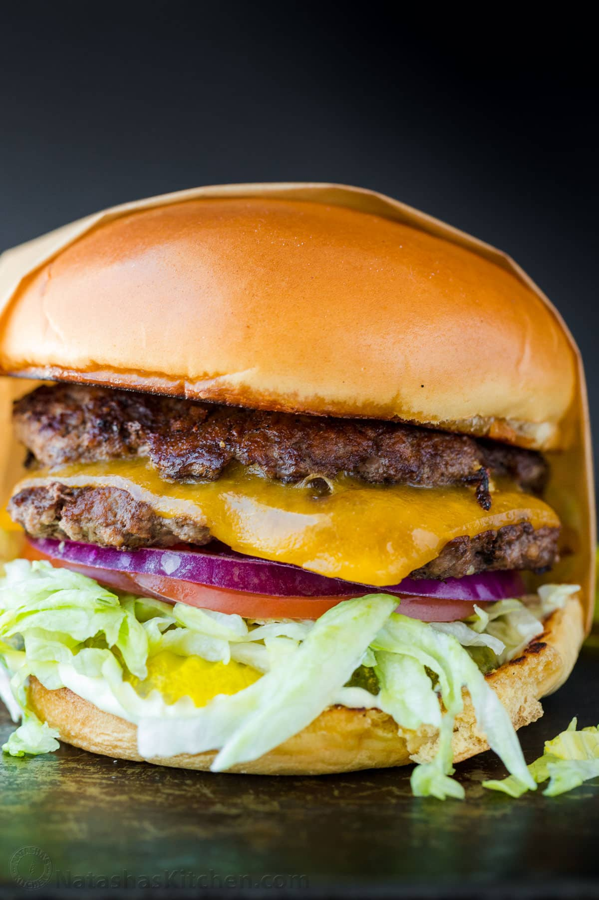

Home
Smash Burger

Description
A smash burger is a style of burger made by pressing a ball of ground beef directly onto a hot griddle or flat-top grill, creating a thin patty with crispy, caramelised edges and a juicy centre. The high heat and pressure trigger the Maillard reaction, which gives the meat its deep savoury flavour and signature crust. Unlike thick gourmet burgers, smash burgers focus on simplicity and texture, usually served on a soft toasted bun with melted cheese, pickles, onions, and a classic burger sauce that complements the rich beef flavour without overpowering it.
What makes a smash burger stand out is the balance between crispness and juiciness in every bite. The thin patties cook quickly, allowing multiple layers of beef and cheese to be stacked for extra flavour without feeling overly heavy. The toasted bun absorbs the juices while still remaining soft, and the combination of crunchy edges, melted cheese, and fresh toppings creates a burger that is both indulgent and satisfying. Its straightforward preparation and bold flavour have made the smash burger a favourite in diners, food trucks, and modern burger restaurants around the world.
Ingredients
- Ground Beef - We use 700g of ground beef to make 4 double-patty burgers.
- Sauce - A simple combination of mayonnaise and yellow mustard.
- Cheese - Thick-sliced cheddar cheese.
- Buns - Brioche buns for a nice steakhouse burger look, but any burger bun will work.
- Lettuce - thinly slice your lettuce for a restaurant-style smash burger
- Pickles - Sliced dill pickle
- Tomatoes - Slice into rings
- Red onion - thinly sliced into rings
Steps
- Prepare Patties – Divide 700g of ground beef into 8 equal portions (85g each), cover, and refrigerate until ready to cook.
- Make Sauce – Stir together 1/3 cup mayo and 1 tsp mustard and set aside.
- Prep Toppings – fully prep your toppings ahead to assemble the burgers right away while the patties are hot and juicy off the grill.
- Toast buns – lightly butter the cut side of your buns and toast on a griddle or skillet over medium heat until golden brown. Transfer to a rack.
- Cook patties – increase to medium-high heat. Depending on your surface area, place 2 to 4 cold pieces of meat onto the hot surface. Working quickly, cover each piece with a sheet of parchment paper and smash each into a thin patty. Remove parchment paper, season with salt, pepper, and garlic powder, add a dab of sauce, and flip. Sear for 2 minutes on the first side and about a minute on the second side.
- Add cheese – place a slice of cheese onto half of the patties and top with a second patty, and remove from the heat. Serve warm over toasted buns with toppings and more sauce